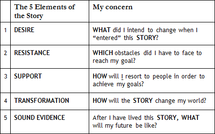

It is an honest and objective question: "What is your leadership style?" This is a classical question in an admission interview.

Ok, but do I have to answer that in an abstract way?

Abstract?! What do you mean?
The Admission Committee (AdCom) members expect me to have a “theoretical” comprehension of the Leadership them, is that it?
Yes and no. Concretely, they want to hear (read) a STORY in which you can reveal your leadership style.
Ok. Thus, basically, I must do what I have been doing since Km 1: tell a STORY.
Yes. I agree that the best way to ask is "give me an example ..." One of the greatest virtues of an essay is the capacity to illustrate your thesis with CONCRETE evidence - that is what we call "show rather than tell."
Thus, I must open my answer with a thesis showing my leadership style and then tell my STORY about leadership, right?
Exactly. Every good answer, be it a text or speech, must follow this pattern: an opening with a thesis, then the STORY illustrating what you have just announced. We will talk a lot about that during the interview period.
Ok. In the previous Km, you said that the 4 STORIES of the Heroes are inspired in the real lives of your former students. But let me ask: were these essays written by the students who obtained admissions to the best schools?
What I can say is that if you can explore STORIES that are similar to theirs, you will be well positioned for the evaluation of your candidacy.
Ok. So you are saying that the people who are admitted to HBS or Stanford do not tell anything so different from what I am reading on www.MBA4Heroes.com.
As I mentioned, the main virtue of a package is the student’s capacity to show COHERENCE and COHESION among the various essay. A winning applicant will not always stand out for an individual STORY. Rather, he or she will certainly show a SYNTHESIS of the various elements of their candidacy that became a competitive advantage. But, answering your question, the winning applicants do not tell anything different from what you will see in the Megaron Marathon. Naturally, sometimes a STORY – good or bad - will be quite distinct from all others.
Ok. But what if the applicant wants to sell, for instance, PE, but his story is entirely built on the consulting path?
Then, perhaps it is not a good idea to sell PE, but management consulting (MC). Or, he can sell what he intends to do after he eventually leaves MC. There are options…
Ok, but what if this applicant’s profile is like William’s (The Implementer, the PE guy).
What if, the stories he can tell are better aligned with the theses (Paragraph 1) that William is selling? In other words, what if this applicant is like William, but unfortunately, he is following a professional path that is more aligned with that of Sophia, the Conductor, in management consulting?
In this case, then, he is in the wrong industry. He should be a PE analyst! (Laughing)
I see, Megaron, but you know better than I – for various reasons, he did not manage to get a PE position before his MBA.
There are, of course, several former consultants, former students of mine, who are in PE today because they did an MBA.
So... if the guy already shows evidence of his potential for shifting into PE, can’t he sell PE?
He certainly, can. If he has good evidence, he can try to sell PE, but I must tell you that PERHAPS it is not good strategy. Observe that most of my former students who were MC analysts before their MBA and today are partners in those mega PE funds did not sell that they would be future PE managers.
Why not?
Simply because it was not their “best future now” at that moment.
Ok. Therefore, if I got the application game correctly, it is all about telling 4 STORIES in which I reveal my Competences.
You got it correctly. Those 8 Competences must be tied to your post-MBA goal.
Later on, in the Marathon, I must select my 3 strongest Competences.
Unfortunately, schools will not offer you room to sell your 8 STORIES. Usually, they will let you write only 2-4 essays (total 800-1500 words).
That is why I must focus on only 3 Competences.
Well, you must remember that later on you will be questioned during an interview. In November, (Round-1) you will be asked to detail Competences that are not explored in the package to be sent in SEP/OCT (Round-1).
I see. To build the essay package I must focus on 3 of the 8 Competences. But won’t you tell me which of the 8 Competences I must explore if, for example, I want to sell that post-MBA I want to work for an Innovative Enterprise?
I will give you this tip later in the Marathon.
And why not now?
The reason is simple: you will write 3 instead of 8 STORIES. It is important to be prepared for an interview and not only to write essays. Every year AdCom’s are giving less and less importance to the essays and more value to the interview.
I have heard that. Some schools are even requiring group dynamics, right?
We will discuss all there is about interviews later on. One thing at a time, I’d say. But let’s go back to what you can write for 4th Super Power (SP4), Aptitude to Lead People.
Wow, we are already analyzing the 4th SP. We have already discussed SP1 - Ability to Think Analytically; SP2 - Ability to Think Creatively; SP3 - Ability to Get Things Done. What are the next ones?
We still have 4 other Super Powers: SP5 - Ability to Deal with Uncertainty, Diversity, and Frustration; SP6 - Courage to Question the Status Quo; SP7 - Aptitude to Communicate; SP8 - Ability to Bring out the Best in People.
Just to clear things out: at the end of those 8 analyses, I will select 3 of those Competences to assemble my SYNTHESIS, right?
Exactly.
Ok.
Nicholas, one more time we are getting off track. Let’s go back to our Km 5. Every B-School requires candidates to show their leadership capacity in their application.
Applicants are expected to bring insights about their leadership style through both essays and interviews, huh?
Exactly.
Great. I already know what to write. I’ll continue to align my story with the values of David, The Innovator.
Go for it. But, please, do not forget to place your THESIS (“Paragraph 1”) before you start writing your story about Leadership, ok?
No problem. I will copy the "Paragraph 1" (Thesis - Controlling Idea) presented by David. And, of course, "Paragraph 3" in which I reinforce that the STORY I have just told is good evidence that I can reach my goal of working for an Innovative Enterprise at the end of my MBA program.
Enough taking: roll up your sleeves and get to work. As you’ve done in every Km, now you must go to Action Plan Km 5. There I will explain how I will evaluate your text.
Ok.
Oh, and do not forget to build the text of your STORY on the basis of the 5 Elements, ok? Check on the following table the questions that you must ask yourself before you start writing your STORY.

I remember. You will grade me from 0 to 5 depending on the presence or absence of each of those 5 elements. Why do we need to use Element 3 in every story?
Essentially, you must show that you are a mature person and that you are not naïve to believe that you can do something valuable without the support of a group.
I see. One of the Heroes (I don’t remember who) even said: "I need to do an MBA because I must go from an analyst with great potential to an effective leader."
Right. I know most of your professional adventures are about your life as an analyst, a guy that isolates himself and keeps working on breaking a problem, but I would like to read stories that show your interaction with PEOPLE, ok?
Not easy at all.
I ask for your special attention to the text of the 4 Heroes when they ask those surrounding them for help.
Ok.
That is it for the time being. Check "My Marathon" and read My Action Km 5 file. On Km 6, we will talk about SP5 - Ability to Deal with Uncertainty, Diversity, and Frustration.
Thank you, Megaron.
Thank you for your effort, Nicholas. And remember: Keep Running.